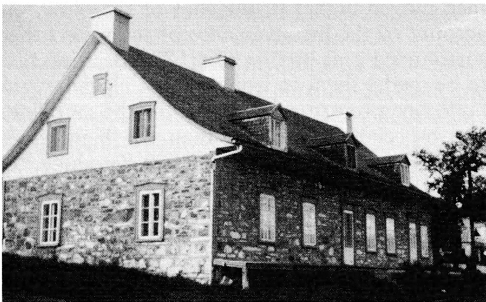
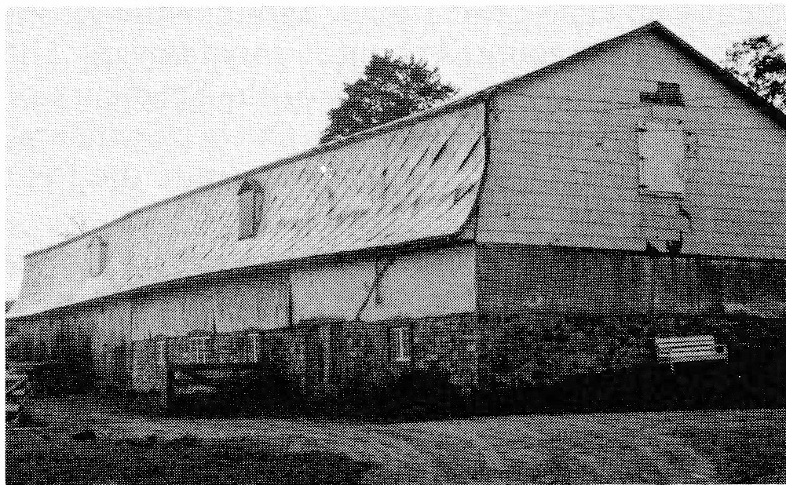
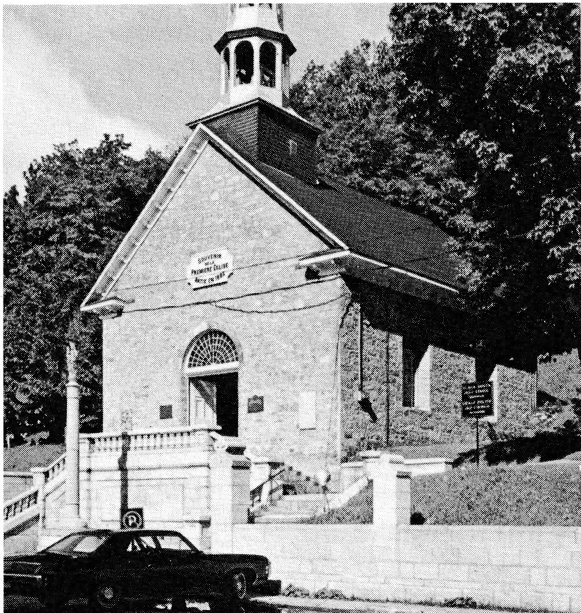
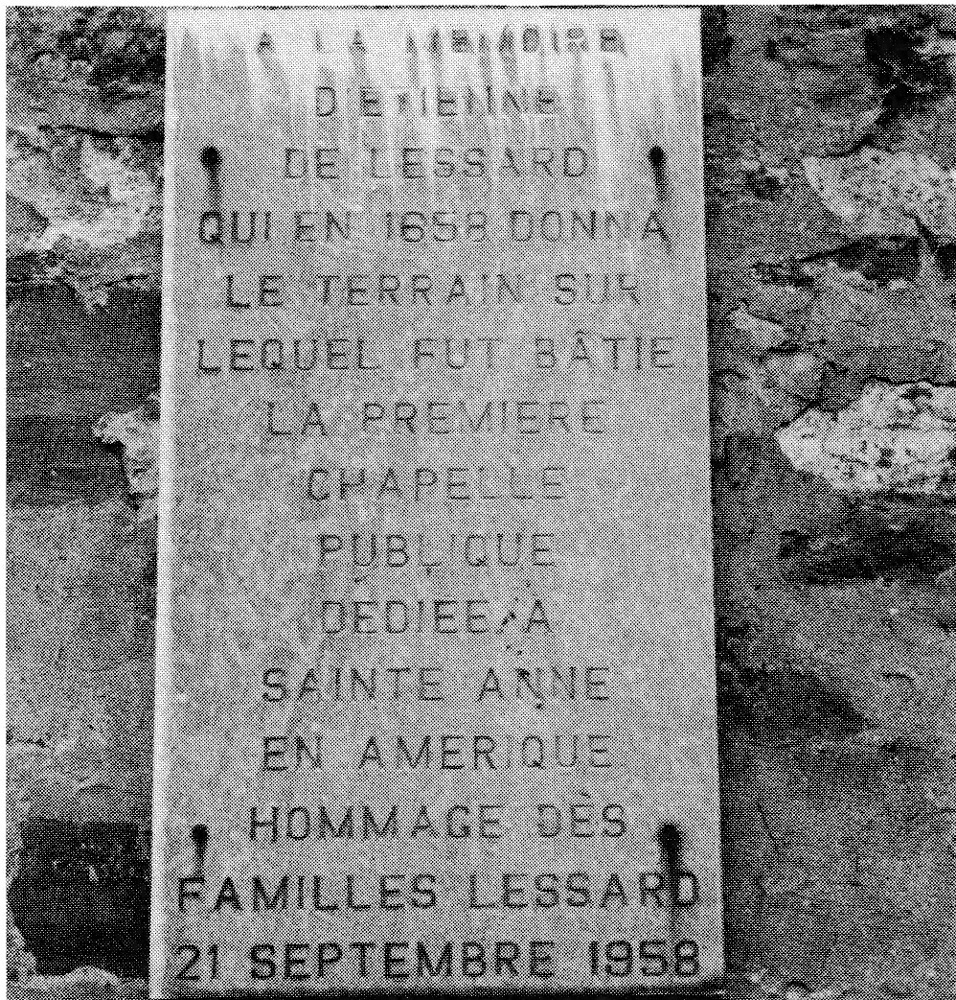

INTRODUCTION TO LESSARD FAMILY STORY
By Marcelle Sevigny
My task for this book was to research the Lessard side of the family. I did not know where to begin so I wrote to the parish priest of St. Alexis des Monts, Quebec, looking for Grandpa’s birth and/or marriage certificate. After several letters back and forth, and after deciphering which Joseph Lessard he was, I finally obtained his baptismal certificate along with his parents’ marriage certificate. They were married in 1882. I was then notified that the parish registers only went back to 1872, ten years previous to his parents’ marriage. Having hit that much, I wrote to the Public Archives of Canada in Quebec. They were of no help to me. Then, on a hunch, I wrote to Ste. Anne de Beaupre asking if it was true that the land had been donated by a Lessard. My mother always said it was. To my utmost surprise, I received a friendly and encouraging letter in response from a Father Gérard Lebel who said, and I’ll translate, “There is only one Lessard ancestor as far as I’m concerned. You are related to this ancestor, Etienne de Lessart. But we will have to prove it.” He then asked me to send him all the information I could give him on my grandparents, etc. and so on up the ladder. It took from the 18th of February, 1983, till January 29, 1984, to fill in the rest. Later, Father Lebel wrote to me and said, “After two hours of perspiring over the papers I can give you a complete answer.” Lo and behold — he had all the ten generations completed from my parents up. You can imagine my joy at his discovery!
Fortunately, there is a fair amount written about this first ancestor, Etienne de Lessart. I will try to add a bit to what is written in the book, Our French-Canadian Ancestors, by Thomas J. Laforest.
We know that Etienne de Lessart, ancestor of the Lessard family, was born in 1623 in Normandy (see map). The only thing we know of his origin is the name of his parents, Jacques and Marie Herson, and the name of the village where he grew up, Chambois.
Although there is no record to prove it, it is believed that Etienne de Lessart came to New France around 1645. On the third of June, 1646, he was present at a baptism where he was the godfather. The following year, 1647, he was the messenger of very good news. It was he who announced “the help promised by France” was on its way. The event was announced in these words, “This same day (June 21), Mr. de Lessart returning from Tadoussac brought the first news from France which had been received from Captain Le Fèvre who had arrived at l’Ile Percée ... that five ships were preparing to come; that peace had been made in France.”
The land that Olivier LeTardif gave Etienne was one of the nicest pieces of land (see map D-4). Seduced by the life in New France, Etienne chose that piece of world for his children to be born on. The young girl he loved was born in Paris around 1634. She was 18 years old and already had behind her about 17 years of life in New France. Charles Sevestre and Marie Pichon arrived in New France with three children from Marie Pichon’s first marriage to Philippe Gauthier de Comporté and two daughters of their own. Charles Sevestre was a man estimated to be “well-off.” His descendants were perpetuated to the present day by his daughters.
One account mentions that 12, not 11, children were born of this union (Etienne and Marguerite) of which 8 later married.
Every year, on the feast day of St. Stephen (December 26), Mass is celebrated as was promised by this ancestor in 1651. As for the barn that had been occupied by him and the oldest of his descendants to perpetuity (forever), it was used by Lessards until 1931 when the family sold it for $75.00.
ETIENNE LESSART
by Renald Lessard
Etienne de Lessard, son of Jacques and of Marie Herson, was orginally from Chambois in Normandy. In 1645, at about the age of 22, he left for New France, a distant colony of a few hundred harassed people. On 3 June 1646 we pick up his trail at Trois-Rivieres where he was acting as a godfather. For a period of several years Etienne was associated with Martin Grouvel, a river pilot of Quebec. It is probably this association that accounts for his presence in 1646-47 at Trois-Rivieres and at Tadoussac.
HIS MARRIAGE
On 8 April 1652 at Quebec, Etienne de Lessard and Marguerite Sevestre were betrothed. She was the daughter of Charles, a notable of Quebec, and their union was “in the presence of the recognized witnesses Mr. de Lauson Gouverneur, Mr. de Lauson junior, Fils Senechal, and Mr. Chartier.” The couple installed themselves at Sainte-Anne-de-Beaupre.
COLONIST AT SAINTE ANNE
In reality, Etienne had already obtained a concession on the spot from Olivier Letardif, one of the members of the Beaupre Company; which concession was granted him on 10 February 1651. It comprised 10 arpents of river frontage, extending to a depth of a league and a half inland. In order to clear his land, named Saint Etienne, he had a few indentured workrers in his service; such as Michel Marquiseau, Urbain Jamiveau and Jean Chauvet dit Lagrere. By 1669 they had already cleared 35 arpents and, according to the census list of 1681, Lessard said that he owned 3 guns, 7 head of cattle, and 40 arpents of cleared land. On this land he grew — among other things — wheat, barley, peas and even some cabbage.
COMMERCE AND NAVIGATION
Etienne was a very active man. He carried on business relations with many merchants such as Charles Aubert, Sieur de la Chesnaie de Quebec and Daniel Baile, Sieur de la Saint-Meur de La Rochelle in France. Lessard owned a boat, a rather large one considering the times, about 30 by 13 feet. It had a cabin at either end, which made it seem elegant indeed and was configured to some extent after a similar craft which he used to ply between Quebec and his seigneury of Sainte Anne. Be this as it may, his principal occupation seems to have been cultivating the land.
A SEIGNEUR
Etienne was the first Seigneur of the Ile-aux-Coudres. In fact, this seigneury was conceded to him by Frontenac on 4 March 1677. Lessard sold it to the Seminary of Quebec in 1687 for 100 livres. On 27 April 1688 he became co-seigneur of Lanoraie, a domain situated between Trois-Rivieres and Montreal. He sold his part on 12 March 1698 to Jean Berudet before the Notary Charles Roget.
THE FIRST CHURCH AT BEAUPRE — 1658
In 1658, Saint-Anne-de-Beaupre was called Petit Cap (The Little Cape), and the little settlement already counted about twenty families. The land-grant lists and records of the Seigneury of Beaupre, still preserved in the Quebec Seminary, make it possible for us to reconstitute the Petit Cap as it then was.
On March 8 of that year, in an official deed drawn up by the royal Notary Audouart, Etienne de Lessard “seeing the inclination and devotion that the settlers of Beaupre have long had to have a church or chapel in which they might assist at Divine Service and participate in the Sacraments of Our Holy Mother the Church, donates a lot of two arpents wide, by a league and half deep, to the Pastors who will be established there. The said donation being made on condition that in the present year of 1658 work be begun and continued without let-up for the building of a church or chapel by the inhabitants of the place, on the said lot, at the place which will be decided upon as most handy, in the opinion of the Vicar General.”
There was no delay. On the following March 13, Father Jean de Quen, S.J. could note in the Jesuit Diary, that “the acting Governor (Monsieur d’Ailleboust), went that day to the Beaupre shore to see if work was being carried out on the small forts that served for their protection. The Reverend Father Vignal blessed the site of the new church. My Lord the Governor laid the first stone thereof.”
It is still possible, today, to identify with some precision the site of this first church of 1658, situated on the river shore at the high-water line, according to a report made in 1686, addressed to Father de Maizerets and still extant in the Quebec Seminary’s archives.
Little is known of the building of the little church. On December 26, 1659, in the presence of Father LeMercier, Mr. Jean Picard, Warden of the Church of St. Anne of Petit Cap, apparently sent a financial report. The Church still owed him, for his work, thirty-four livres and ten sols. On March 18, 1660, Nicolas Verieul made a donation to the church of St. Anne of the Petit Cap “to help out in the building.” The Church is said to be “already begun.” The church of 1658 was set on an elevated spot near the shore. In the choice of this site, little account had been taken of the spring high tides, particularly those which occur every seven years. The note addressed by Father de Maizerets on July 7, 1686 clearly states: “The church of Saint Anne was for the first time placed at high tide level on the river shore, and then moved higher to the foot of the bluff, on account of the inconvenience of the waters that surrounded it at its first site.” The decision had to be made, then, to transport the chapel, or to build a new one, further away from the shoreline, and especially higher up than the high water mark. It was not possible to build elsewhere, on ground donated by Etienne de Lessard on March 8, 1658, for there was not enough room between the bluff and the river shore.
THE CHURCH OF 1661
Urged by his own generosity, and also, perhaps, by the desire to keep the church on his grant of land, Etienne de Lessard made a verbal offer of an adjacent plot of land to the east of the original grant. Bishop Laval gladly accepted, for on that particular spot, the ground rose to about ten feet above sea level, and the hillside retreats landwards for about fifty feet. If the church was built parallel to the river, then there would be lots of space.
It was built in record time. First, Robert Pare and Jean Picard dragged the wood to the spot, using Etienne Lessard’s oxen which had been lent for four days. Then Jean Picard sawed out the chevrons and measured off the planks. Less than three weeks after, a pot of wine was given to a person named Bontemps, and identified as Francois Boivin, in exchange for the first wooden peg set in the building. (Wooden pegs were more often used than the hard-to-come-by iron nails.)
The edifice was to be forty feet long. Instead of making the walls by laying one beam on top of the other, then the most usual procedure, they were built in what is known as “colombage pierrote” (half-timbers). This method consisted of laying a field-stone foundation, on which a cedar frame was laid. Into this were mortised four-abreast upright beams, at regular distances of about nine inches apart. A mason named Pierre Cauchon, of Chateau-Richer, sold for this purpose twelve “pipes” (hogsheads) of lime. Jean Picard took five days to float it to the building site, using Etienne Lessard’s boats.
Two craftsmen who boarded in the homes of Lessard and of Pierre Giguere worked for a whole month with the master mason, Pierre Simard, nicknamed Lombrette, on the exterior of the church. Father Ragueneau, S.J. on one of his visits from Quebec to see how the work was coming along and to encourage the workers, brought with him the roofing nails. We can conclude, then, that the outside of the church was finished when Father Thomas Morel arrived from France, on August 22, 1661, to be almost at once named by Bishop Laval for the ministry along the Beaupre Shores.
THE DEATH OF MARIE PICHON
On the death, in February, 1662, of Marie Pichon, widow of Charles Sevestre, Etienne inherited a “half of a cellar, half of a hayloft, some rooms serving as a bakery and a fourth of the courtyard, altogether consisting of a fourth part of the house and courtyard belonging to the late Master Charles Sevestre, formerly Lieutenant of this jurisdiction (Quebec), the said house situated in the lower town, Rue Notre-Dame. Many times he rented out his part of the house and finally on 6 April 1683 he sold it to Francois Hazeurt and Etienne Lander on “That remainder which may be useful, together with everything inside that is left after the fire of the 4th and 5th of last August.”
THE DONATION
On 26 March 1699, Marguerite and Etienne, “being victims of their old age, which is advanced and renders them infirm and subject to the natural indisposition which accompanies the aged, and which causes a loss of spirit and force, and after having taken good counsel, have regulated their own affairs and it is of more advantage to them now to give or to sell their heritage to their two children named Prisque and Joseph.” As for the children, “they will feed and care for their father and mother and treat them according to their station in life. Their rooms shall be clean and heated so as to stave off illness for the remainder of their days and at the end of their time, they shall be buried, and prayers shall be offered for the repose of their soul, according to the customs.” Etienne was 66 years old when this act was made.


HIS DEATH
The month of April 1703 was a time of bereavement for the Lessard family, because on the 21st, Etienne was buried "dead at the age of 80 years, on the day before about 3 in the afternoon, after having received all the Sacraments and after having given all the thoughts and sentiments of a good Christian and true Child of the Church." Etienne was probably a victim of the smallpox epidemic then sweeping the colony. His wife Marguerite survived him for 17 more years.
HIS DESCENDANTS
Eleven children were born from his union with Marguerite Sevestre, of whom 6 boys and 2 girls were later married. The descendants of Etienne de Lessard are dispersed throughout the Province, but they are particularly numerous in the region of Quebec City and the Beauce. Some adopted the name DeLessard and a few even LaToupie. Let us note in conclusion that Etienne was a respected man in spite of some problems with the law. He was a Captain of Militia (1684) and also Warden of Sainte-Anne.
[Ed.'s Note: The Etienne Lessard story is taken from
Our French-Canadian Ancestors
by Thomas J. Laforest
First Edition
The LISI Press
Palm Harbor, Florida
1983
The footnote references have been omitted.]


[Ed's Note:]
The first chapel at Beaupré was built in 1658 and dedicated to Sainte Anne. We learn from a small booklet, Sainte Anne de Beaupré: Guide Book for Pilgrims and Visitors, that less than a week after the land was blessed and the corner stone laid, the first miraculous cure took place. In the following years, while there were many changes to the Church of Sainte Anne, miracles continued to occur. All are attributed to the intervention of "Good Sainte Anne." Statistics show that in recent years, 1,000,000 people visit the Shrine annually. Amazing as this seems, we were no less surprised to learn that in the period from the construction of the little Chapel until 1700, a total of 42,000 pilgrims and visitors called at Sainte Anne de Beaupré.
The single act of donating a small piece of land was the modest beginning of the Shrine. And so it is in life -- God uses the simple and seemingly insignificant to create a masterpiece, construct a basilica or fashion a saint.
We, the descendants of Etienne, are grateful for his example of generosity, compassion and foresight.